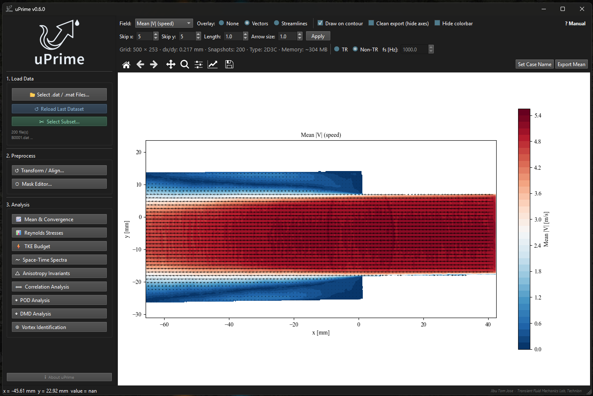

Turbulence is complex. Analysis shouldn't be.
uPrime is a standalone desktop application for post-processing and turbulence analysis of velocity field data from PIV and CFD. Reads Tecplot ASCII .dat (LaVision DaVis) and MATLAB .mat files. No scripting. No setup. Just analysis.

NEW IN v0.6
- Mean & Convergence module: mean velocity line profiles plus point-wise statistical convergence check using Welford's online algorithm with sustained-crossing N* detection.
- MATLAB .mat file input: classic v5/v7 and v7.3 (HDF5). Variable confirmation dialog with auto-detection, snapshot subset spinboxes, single-snapshot rejection.
- Multi-case comparison: import previous results as CSV and overlay in Reynolds stress, TKE budget, spectra, correlation, anisotropy, and mean velocity plots.
- Inline non-convergence notice: persistent amber top-bar on Reynolds, TKE, and Spectra modules when fewer than 500 snapshots are loaded.
- TKE budget split panels: TKE k now plotted in a dedicated upper panel, P/C/D/R in the lower panel sharing the x-axis.
- Float16 storage option for .mat files exceeding 5 GB, with explicit warning about reduced numerical precision.
Key Features
📊 Convergence verification
Cumulative first, second, and third central moments at any picked point, with automatic N* detection. Know whether your statistics are trustworthy before you publish them.
📂 Two input formats
Reads Tecplot ASCII .dat from DaVis (one file per snapshot) and MATLAB .mat files (full time series in a single file, classic and v7.3 HDF5). Auto-detects variable names.
⚡ Non-blocking computation
All heavy analysis runs in background threads. The window stays fully responsive during POD, DMD, TKE budget, and vortex identification.
💾 Large dataset support
Datasets exceeding 4 GB are automatically memory-mapped to disk. Handle 10,000+ snapshots without running out of RAM.
🎭 Non-destructive masking
Draw masks over walls, shadows, and reflections. Raw data is never modified. Toggle masks on and off instantly.
🔍 Unit auto-detection
Reads mm/m/s units directly from Tecplot .dat file headers and MATLAB variable shapes. No manual configuration needed.
📄 Publication-ready export
PNG (300 DPI), PDF, and SVG with editable text. Compatible with Adobe Illustrator and Inkscape.
🖥️ Standalone executable
Windows .exe with no Python or dependencies required. macOS and Linux users run from source in three commands.
📐 Transform & Alignment
Correct camera misalignment, shift the coordinate origin, and mirror datasets. Built for experimental data where even a 1° tilt can corrupt turbulence statistics.
🧠 Full turbulence pipeline
Reynolds stresses, TKE budget, spectra, POD, DMD, correlations, and vortex identification, all in one environment. No MATLAB or Python required.
📏 Integral scales & correlation
Compute spatial and temporal correlations with automatic integral length and time scale extraction using multiple robust methods.
🔀 Multi-case comparison
Import previous results as CSV and overlay them on top of the current dataset. Per-case styling, manage cases, combined export.
Input Formats
Tecplot ASCII .dat (LaVision DaVis export):
one file per snapshot, select multiple files to load a time series.
Variable names and units auto-detected from the header. Supports 2D2C and 2D3C (stereo).
MATLAB .mat (classic v5/v7 and v7.3 HDF5):
a single file containing the entire dataset. Velocity arrays in shape (Ny, Nx, N_snap);
coordinates as 1D vectors or 2D meshgrid (auto-transposed if needed). Variable confirmation dialog
reads metadata first, so even a 10+ GB file opens the dialog within seconds.